Roto
Description
Roto allows you to quickly create sophisticated animated mattes using B-Spline, Bézier, X-Spline or Magnetic Freehand shapes. Intelligent design and easy-to-use tools, such as variable edge softness on a point by point basis and realistic motion blur, assist you in creating complicated shape animations. Integrated motion tracking makes the normally tedious task of rotoscoping a breeze.
Where did the term Rotoscope come from? A rotoscope was a mechanical device patented by Max Fleischer in 1917. It projected single frames of live action footage onto the animators drawing board. By simply tracing the projected shape, the animator could quickly produce incredibly lifelike drawings. With the passage of time, Rotoscoping or “Roto” for short has become a generic term for drawing shapes to extract, isolate or affect a portion of an image. It is tedious work, but it’s one of the most important parts of the visual effects process.
Go to the Roto tutorials to see how it works.
Node Group
Image, Silhouette.
Toolbar
When the Roto node is selected, a number of different tools are selectable from the Toolbar to the left of the Viewer.
Toolbar Keyboard Shortcuts
Shortcut | Action |
|---|---|
T | Cycles through Transform Shape and Transform Points modes |
R | Cycles through Reshape, Magnetic Reshape and Brush Reshape modes |
Y | Selects IK (Inverse Kinematics) |
B | Selects B-Spline |
S | Selects X-Spline |
Shift-B | Selects Bézier |
Shift-F | Selects Magnetic Freehand |
Shift-S | Selects Square |
Shift-C | Selects Circle |
Shift-T | Selects Tracker |
M | Selects MultiFrame |
Shift-O | Selects RotoOverlay |
Alt-F | Toggles the shape feather handle on/off |
Alt-K | Adds weighted keyframe |
V | Draws unselected/inactive shape outlines using the shape opacity value |
Stereo Shape Creation
When in the Left or Right View of a stereo project, adding a shape creates it in either the Left or Right View.
Go to the Stereo Roto tutorial to see how stereo rotoscoping works.
Bézier (Shift-B)
Creates a Bézier spline.
Go to the Bézier tutorial to see how it works.
To draw a Bézier spline, click on the image to place the first control point and drag the cursor while keeping the mouse pressed to extend the control point’s tangents. Click on the screen to add more control points and when finished adding points, click the first control point that you added to close the shape.
To create an open shape, add points and press the Esc key or switch to a different tool to finish the shape. Then in the Reshape tool, select the open shape, adjust the Stroke Width to set its thickness and choose either a flat or round Cap Style in the Object Parameters.
Originally developed by Pierre Bézier in the 1970's for CAD/CAM operations, Bézier splines became the foundation of the entire Adobe drawing model. If you're a user of Adobe products, you've probably used Bézier’s. Bézier splines are defined by control points and tangents. The position of the two tangent handles control the amount of a point's curvature.
A shape is created by drawing a Bézier curve path. This path contains control points and tangents that define the form of the curve.
Control Points
Control points are locations on the curve that determine its shape. When a control point is selected, two tangents extend from the control point. These tangents guide the shape of the curve.
Joins
The area of the curve at the control point is called the curve join.
Joins can either be corner or cardinal (smooth) joins. When control point tangents are positioned in opposite directions, the join is cardinal. In contrast, corner joins have their tangents positioned at an angle to each other.
Adjusting Bézier Curves
The length and direction of a control point’s tangents direct the curve through that control point.
Control points have two tangents that can extend from it. The path of the curve through the control point is determined by the length and orientation of the tangents. When you drag one tangent’s handle, the adjacent tangent moves as well. Using keyboard shortcuts while dragging allows you to control how the curve passes through a control point.
Bézier Keyboard Shortcuts
Shortcut | Action | Curve |
|---|---|---|
No key needed | Adjust the length of one tangent while retaining a fixed angle between two tangents |  |
Ctrl/Cmd | Adjust both tangents simultaneously while retaining a fixed angle between two tangents |  |
Alt | Adjusts only one tangent to create corners | |
Shift | Adjusts only the length of one tangent (similar to the “No key needed” shortcut) | |
Ctrl/Cmd-Alt-1 | Sets the point tension to Corner | |
Ctrl/Cmd-Alt-2 | Sets the point tension to Cardinal |
Extending Short Tangents
Sometimes a control point’s tangents are so close together that trying to modify the tangent results in movement of the control point. If this is the case, you can force the tangents to move without affecting the control point by pressing the Alt key while dragging the tangent. Only the tangent will move, leaving the control point unaffected.
Moving Curve Segments
Normally, you move control points to adjust the form of a shape, but you can also move the portion of the curve between control points. To move a curve segment, deselect all control points by clicking somewhere off the shape and then Ctrl/Cmd-drag a curve segment between control points.
Once you start dragging, the Ctrl/Cmd key can be released.
Note: The surrounding tangents remain smooth, but if you want to keep adjacent tangents from moving, hold down the Alt key while dragging.
B-Spline (B)
Creates a B-Spline shape.
Go to the B-Spline tutorial to see how it works.
To create a B-Spline, click on the screen to create a control point and add as many points as you like. When you are finished adding points, click the first control point that you added to close the shape.
To create an open shape, add points and press the Esc key or switch to a different tool to finish the shape. Then in the Reshape tool, select the open shape, adjust the Stroke Width to set its thickness and choose either a flat or round Cap Style in the Object Parameters.
In contrast to Béziers, B-Splines don’t use tangents and are created by only using control points. The position of the points, their tension settings as well as their proximity to each other determine the curvature of the shape. B-Splines are somewhat similar to NURBS (non-uniform rational B-Splines) that are used in many 3D modeling packages.
The images below show how the same shape can be created with either Béziers or B-Splines.
Because the two spline types of have significant strengths and differences, artists are religiously loyal to one or the other. B-Splines create natural curves but are terribly inefficient at defining square corners and require more points to define than a similar Bézier shape. On the other hand, Béziers can easily create corners and use fewer points, but can have an unnatural curved path caused by overly malleable “split” handles. Depending upon your expertise, you may find Bézier splines are more appropriate for square and angular shapes while B-Splines will work better for objects with a lot of curves like a person’s face. Just to upset the status quo, there is a new kid on the block called X-Splines which is explained in the next section. This spline type brings together the best of both B-Splines and Béziers.
Adjusting B-Splines
In contrast to Béziers, B-Splines don’t use tangents and are created by only using control points and are simple to adjust. The position of the points, their weight settings as well as their proximity to each other determine the curvature of the shape. The weight (amount of pull on a point) decides how sharp or smooth it is. Silhouette employs variable weight intensities on a point by point basis. The weight can be adjusted by hovering over a point and Alt-dragging to the right to create a corner point or Alt-dragging to the left to create a smooth point. Alternatively, you can Alt-click on one of the selected points to cycle through the preset weight settings.
Note: Do not use extreme, variable weight adjustments if you are planning on converting the B-Spline to a Bézier Spline.
B-Spline Keyboard Shortcuts
Shortcut | Action |
|---|---|
Alt-drag control point right | Creates a corner point |
Alt-drag control point left | Creates a smooth point |
Alt-clicking control point | Cycles through the preset weight settings of the point |
Ctrl/Cmd-Alt-1 | Sets the point tension to Corner |
Ctrl/Cmd-Alt-3 | Sets the point tension to B-Spline |
Note: The Alt-click and pop-up menu preset weight settings for Corner and B-Spline can’t be animated.
X-Spline (S)
Creates a X-Spline shape.
Go to the X-Spline tutorial to see how it works.
To create a X-Spline, click on the screen to create a control point and add as many points as you like. When you are finished adding points, click the first control point that you added to close the shape.
To create an open shape, add points and press the Esc key or switch to a different tool to finish the shape. Then in the Reshape tool, select the open shape, adjust the Stroke Width to set its thickness and choose either a flat or round Cap Style in the Object Parameters.
A X-Spline is an intuitive and easily editable spline format whereby its points can be of three different types: Cardinal, Corner or B-Spline.
• Cardinal creates a path that passes smoothly through each point.
• Corner makes a path that consists of angular corner points.
• B-Spline creates a smooth path that is determined by the surrounding points.
Look at how the same set of points can yield entirely different shapes based on the point type setting.
The point type can be changed at anytime as well as animated from one type to another. You’ll find that the beauty of X-Splines is that the shape’s points can be a mix of Cardinal, Corner or B-Splines.
The images below show how the same shape can be created with either Bézier splines, B-Splines or X-Splines.
Adjusting X-Splines
X-Splines are created by using control points and then adjusting their weight to coincide with one of the point types: Cardinal, Corner or B-Spline. The point type can even be somewhere in between one point type and another. The weight can be adjusted by hovering over a selected point and Alt-dragging to the right. The weight of the point goes from Cardinal to Corner to B-Spline. Alternatively, you can Alt-click to cycle through the different point types.
Edge Snapping
You can snap the control points of an X-Spline to edges of an object by using the Edge Snapping tool. Select the points you want to move and press the Alt-S key.
Alternatively, start dragging the points, hold the Alt-S key down and they will snap to the nearest detectable edge. In some cases, the points may not snap to where you want them to. If this happens, adjust the points manually.
X-Spline Keyboard Shortcuts
Shortcut | Action |
|---|---|
Alt-drag control point right | Adjusts the weight of the point from Cardinal to Corner to B-Spline |
Alt-drag control point left | When the weight is set to B-Spline, it adjusts the weight of the point from B-Spline to Corner to Cardinal |
Alt-clicking control point | Cycles through preset weight settings of the point |
Ctrl/Cmd-Alt-1 | Sets the point tension to Corner |
Ctrl/Cmd-Alt-2 | Sets the point tension to Cardinal |
Ctrl/Cmd-Alt-3 | Sets the point tension to B-Spline |
Alt-S | Snap selected control points to the nearest detectable edge |
Drag Points-Hold Alt-S | Snap selected control points to the nearest detectable edge |
Magnetic Freehand (Shift-F)
Creates freehand shapes with or without magnetic properties. A magnetic freehand shape snaps the shape boundary to the nearest object edge.
Go to the Magnetic Freehand tutorial to see how it works.
Magnetic Shape
Creates a freehand shape with magnetic properties. There are two methods of creating a magnetic shape: Tracing or Strokes.
Tracing
Click once near the edge you want to start with and move your cursor along the edge you want to follow. The shape boundary snaps to the nearest edge to where the cursor lies, tracing the shortest path from any previous click. When you are done tracing, click the first control point that you added to close the shape.
Magnetic Tracing Shortcuts
Shortcut | Action |
|---|---|
Click while tracing | Anchors the currently drawn path by adding a shape point |
Shift-click | Draws a straight line between the new and previous shape points |
Strokes
Temporary foreground (inside the shape) and background (outside the shape) strokes are drawn for the object you want to create a shape around. Shift-click and drag to create foreground strokes. With each click and drag of the mouse, a green line is drawn. Alt-click and drag to create background strokes. With each click and drag of the mouse, a red line is drawn.
As soon as the first background stroke is drawn, an X- Spline is created around the object.
Add additional foreground and background strokes as needed so that the shape properly surrounds the object.
Press Esc to clear the foreground and background strokes as well as deselect the current shape. You can now create a new magnetic shape or new foreground/background strokes.
Magnetic Stroke Marking Shortcuts
Shortcut | Action |
|---|---|
Shift-click-drag | Creates a foreground stroke |
Alt-click-drag | Creates a background stroke |
Esc | Clears foreground and background strokes / Deselects current shape |
Freehand Shape
Click and drag to create a freehand shape. A freehand shape is exactly like a magnetic shape, minus the magnetic properties. When you are done drawing, click the first control point that you added to close the shape.
Note: Anytime you press and hold the mouse down, a freehand shape is drawn.
Finalizing Magnetic and Freehand Shapes
When a magnetic or freehand shape is completed, an X-Spline that follows the originally drawn line is created.
Adjusting Detail
X-Splines generated by the Magnetic Freehand tool have a fairly high point count to match the subtle changes in the line.To reduce the number of points, select an X- Spline in the Object List while in the Magnetic Freehand tool and adjust the Detail parameter directly above the Viewer.
Adjusting the Detail reduces points for X-Splines created with the Magnetic Freehand tool, while increasing points for normal X-Splines.
Square (Shift-S)
Creates a square or rectangular spline.
To create a Square, click and drag in the shape of a square and release the mouse.
Go to the Square tutorial to see how it works.
Circle (Shift-C)
Creates a circular spline.
To create a Circle, click and drag in the shape of a circle and release the mouse.
Go to the Circle tutorial to see how it works.
Shape and Layer Parameters
Shape Parameters
All of the editable parameters of a shape can be adjusted in the Object Parameters. When a shape is selected, you will see the parameters listed below.
Blend Mode
Controls how objects are blended together.
Add
Adds the object to other objects.
Subtract
Subtracts the object from other objects.
Multiply
Produces a result where there is a union of pixels from two objects.
Difference
Produces a result where a value exists in each object, but not in both.
Max
Looks at the luminance information for each object and selects the value—whichever is brighter—as the result. Darker pixels are replaced while brighter pixels do not change.
Blur
Sets the blur level of the selected shape or shapes. The Blur range is from 0-100 and defaults to 0.
Blur Type
Determines the type of blur.
• Centered
The blur is centered on the edge of the shape, equally blurring inward and outward.
• Inner
The shape is blurred inward from the edge of the shape.
• Outer
The shape is blurred outward from the edge of the shape.
Shrink/Grow
Shrinks or grows the shape’s alpha channel. Negative values shrink and positive values grow.
Opacity
Sets the opacity of the selected shape. The opacity range is from 0-100 and defaults to 100. The interpolation type is set to Hold by default making it easy to turn shapes on and off at particular frames.
Note: You can change the Opacity interpolation type from Hold to Linear at any time. To do so, select the shape’s Opacity keyframes in the Timeline, right-click and select Interpolation > Linear.
Invert
Inverts the shape values. The default is off.
Motion Blur
Motion blur is the directional blurring of rapidly moving shapes. This parameter turns motion blur on or off for the selected shape or shapes. The default is off. To affect a shape, Motion Blur also needs to be enabled in the Node window. See the Motion Blur section of the Roto Node parameters for more information.
Note: Normally, motion blur is calculated going forward, so if there is no shape motion beyond the end of a clip, there won’t be motion blur on the last frame. To work around this, add an extra frame or two to the end of the work range in the Timebar and move the shape’s last keyframe to be outside of the session range.
Color
Sets the color of the shape outline. Left-clicking the color pot opens a standard color picker while right-clicking on the color pot opens a pop-up color menu with 16 primaries.
When the Roto node’s Color > Enable parameter is on, this sets the color of the filled shape.
Stroke Width
Sets the thickness of an open shape. When used on a closed shape, an outline is created.
Cap Style
Sets the end cap style for open shapes. You can choose from Flat or Round styles.
Channel
Determines what channel the shape is rendered into. You can set each shape to Red, Green, Blue, or Alpha. To visualize the results prior to rendering, use View > Channels in conjunction with the Alt-R, G, B and A shortcut keys. The assigned channels can be rendered by connecting the Roto node’s Channels output to an Output node.
Go to the Rendering Shapes to Channels tutorial to see how it works.
Reset All
Resets all parameters to their default state.
Layer Parameters
Layers are used to organize shapes, but more importantly they are used to contain the motion information from trackers. All of the editable parameters of a layer can be adjusted in the Object Parameters. When a layer is selected, you will see the parameters listed below. The Transform, Stereo Offset, Blend Mode, Blur and Invert state of a layer can be adjusted.
Note: When in the Left or Right View of a stereo project, adding a layer creates it in either the Left or Right View. In the Left/Right View, a layer is created in both the Left and Right Views.
Transform
The Position, Scale, Rotation, Corner-Pin and Anchor Point can be adjusted and animated.
Anchor
Sets the anchor point for the layer transformation. Scaling and rotation operations center around the anchor point.
Position
Sets the horizontal and vertical position of the layer.
Scale
Sets the horizontal and vertical scale of the layer. Typing in a negative value will flip or flop the shapes in the layer.
Rotate
Sets the rotation of the layer.
Corner-Pin
The layer can be corner pinned by adjusting the Corner-Pin values.
Upper-Left
Controls the X and Y position of the Upper Left Point.
Upper-Right
Controls the X and Y position of the Upper Right Point.
Lower-Right
Controls the X and Y position of the Lower Right Point.
Lower-Left
Controls the X and Y position of the Lower Left Point.
Surface
The layer’s Surface controls are used for importing or exporting corner-pin trackers, as a reference for an insert/transform, as well as the anchor for the PowerMesh data from Mocha.
Upper-Left
Controls the X and Y position of the Upper Left Point.
Upper-Right
Controls the X and Y position of the Upper Right Point.
Lower-Right
Controls the X and Y position of the Lower Right Point.
Lower-Left
Controls the X and Y position of the Lower Left Point.
Matrix
When tracking data is applied to a layer, the Matrix parameter is used to store the tracker keyframes.
Stereo Offset
Stereo Offset, which only shows up when using stereo sources, is used to align the offset between Left and Right Views of stereo clips and is set to animate by default. This value is automatically set when using the Viewer’s Stereo Align mode’s on-screen control.
Blend Mode
Controls how layers are blended together. See the Blend Mode section for more information.
Blur
Sets the blur level of all shapes within the layer. The Blur range is from 0-100 and defaults to 0.
Blur Type
Determines the type of blur.
• Centered
All shapes in the layer are blurred equally inward and outward centered on the edge of the shapes.
• Inner
All shapes in the layer are blurred inward from the edge of the shapes.
• Outer
All shapes in the layer are blurred outward from the edge of the shapes.
Invert
Inverts all shapes within the layer. The default is off.
Channel
Determines which channel the shapes in the layer are rendered into. You can set a layer to Red, Green, Blue, or Alpha. To visualize the results prior to rendering, use View > Channels in conjunction with the Alt-R, G, B and A shortcut keys. When ready to render into the assigned channels, use the Actions > Render Shapes to Channels action.
Note: This overrides the Shape > Channel setting, except when set to Alpha, in which case the shape’s Channel setting is obeyed instead.
Go to the Rendering Shapes to Channels tutorial to see how it works.
Reset All
Resets all parameters to their default state.
Object List
The Object List is where you can select, lock, combine, rename or delete shapes, layers and trackers. Layers are containers for shapes and other objects and have their own individual transforms.
Add Dock
Adds another Object List.
Lock Node
Locks the Object List to the current node.
Search
Searches for shapes, layers or trackers in the Object List.
Click the Search icon, enter an object name into the search field and it will appear.
• If you type /l or /r at the end of a query, it will filter only left or right stereo objects.
• If you type /a or /b at the end of a query, it will filter only A or B morph objects.
For instance, to show all right side objects, just type /r. To show all left side objects starting with the word deer, type deer/l. Entering deer/rb would match all right side B objects that have the word deer in the name.
Disable the Search icon when done to return to the normal Object List window view.
Add Layer
Located at the bottom of the Object List, this icon creates a new layer. Layers are used to organize shapes, trackers and other objects, but more importantly they are used to contain the motion information from trackers.
Note: Dragging objects onto the New Layer icon will create a new layer and move the objects into it in one operation.
Deleting
Select an object in the list and press Ctrl/Cmd-X, hit the Delete key or use the Delete icon at the bottom of the Object List.
Renaming
You can rename an object by either:
• Clicking on the object once to select it, hitting the Enter key, typing in the new name and pressing Enter again.
• Double-clicking the object, typing in a new name and hitting the Enter key.
• Right-clicking on the object, selecting Rename and typing in a new name.
Selecting
Clicking the name of an object selects it. Multiple objects can be selected by Shift-clicking on them. Ctrl/Cmd-clicking will add to the selection of objects that are located at different levels of the Object List while Ctrl/Cmd-clicking an object after it is selected will deselect it. In addition, if you Shift-click a color pot in the Object List, you select all objects of the same type and color.
Note: Press Shift-W to enable Template Mode which sets the color and opacity of unselected shapes as defined by the Colors > Template Color preference.
Moving
Objects can be moved by dragging and dropping them to a new position in the list or within another layer.
Expanding / Collapsing Layers
Expand All
Shift-clicking the +/- icon expands or collapses all nested layers inside that layer.
Expand or collapse multiple layers at once
If expanding or collapsing a selected layer using +/- icon, then any other selected layers with the same parent will also expand or collapse. This can be combined with Shift to expand or collapse children as well.
Icons
Shape Icons
There are number of icons directly to the right of a shape’s name that can be used to modify shapes. The Opacity, Blend Mode, Invert, Motion Blur and Color icons duplicate the functionality of the Shape parameters in the Object window and does so because it is often easier to change these settings in the Object List when multiple shapes are selected.
View
The View icon, which only shows up when using stereo sources, displays either a L for Left View or R for Right View and indicates which view the shape or layer is assigned to. Clicking on the View icon toggles which view the shape or layer is located in.
Roll
The Roll icon, which only appears when using the Morph node, determines whether the shape resides in the A-roll or B-roll. Morph Shapes create themselves in the proper “roll” when viewing A or B. If viewing any other View mode, creating a shape will default to A. The Object List shows the A/B state and clicking the A or B will toggle the shape to the other roll. Viewing A or B will only show A or B shapes, as appropriate. Creating a shape on the B-roll will automatically set the shape color to blue. Also, Select All in A or B will only select A or B shapes, respectively.
Opacity
Indicates the opacity level of a shape. It is white when opacity is 100%, black when 0% and a shade of gray when somewhere in between.
Clicking on the Opacity icon toggles the shape off (0% opacity) or on (100% opacity) on the current frame. Keyframing is also enabled and the animation type is set to Hold. This allows you to conveniently turn the shape on and off.
Timeline > Shape Visibility Bar
Shapes set to 100% opacity appear as a bar in the Timeline. This is achieved by darkening all tracks associated with an object in areas where the opacity is 0.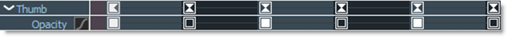
Note: In File > Preferences on Windows and Linux or Silhouette > Preferences on Mac, there is a Shape > Fade Outline With Opacity parameter that draws unselected/inactive shape outlines using the opacity value. The V key toggles the Fade Outline with Opacity behavior on/off and when enabled, the spline visibility tracks with the opacity-splines disappear at 0 opacity and fade in from 1-100%.
Blend Mode
Controls how shapes are blended together. Each click of the icon cycles through the blend modes. See the Blend Mode section for information.
Invert
Inverts selected shapes.
Motion Blur
Turns Motion Blur on or off for selected shapes.
Outline Color
Sets the color of selected shape’s outlines.
Left-clicking the color pot opens a standard color picker while right-clicking on the color pot opens a pop-up color menu with 16 colors.
Shift-click on the color pot to select all objects with the same color.
Note: The default colors can be changed using the Color > Object Colors preference.
Lock
Locks/Unlocks selected objects. A locked shape cannot be edited or changed and is italicized in the Timeline.
Visibility
Click the Visibility icon to hide or show selected objects. Only visible shapes are rendered. To solo an object, Alt-click on its Visibility icon. Alt-Ctrl/Cmd-click to force the visibility of all objects to the on position.
Notes
Select an object and click the Notes icon to bring the Notes window forward. Click in the Notes tab and type your note for the selected object. Currently, shapes, trackers, depth objects, and layers are supported.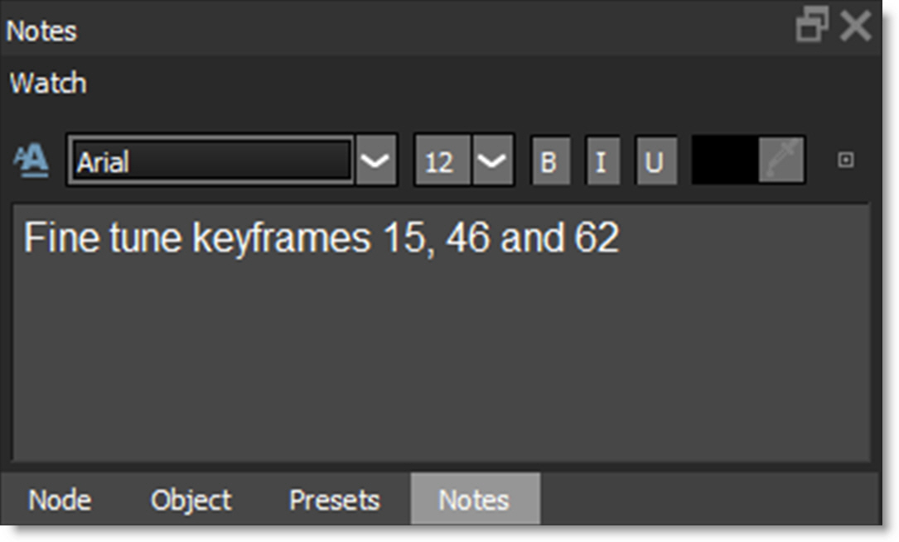
The Notes icon in the Object List changes once a note is entered for an object.
• Hovering over the Notes icon in the Object List displays the note, if there is one, as a tool tip.
• The Status Bar displays the object name and the note for the selected object.
Formatted Text
Enables/disables formatted text.
• Font Type
Selects the font type.
• Size
Sets the font size.
• Bold
Enables bolding.
• Italics
Enables italics.
• Underline
Enables underlining.
• Color
Sets the text color.
• Reset
Clears all text.
Layer Icons
There are some icons directly to the right side of a layer’s name that can be used to modify layers.
The Layer’s View, Blend Mode, Invert, Color, Lock, Visibility and Notes icons have similar functionality to the ones used by other objects.
Active Layer
The Active Layer box displays a check mark when the layer is selected. Clicking the checkbox will toggle the state of the Active Layer.
Object List Shortcuts
Shortcut | Action |
|---|---|
Click on an object | Selects the object |
Shift-click an object | Adds an object to the current selection |
Ctrl/Cmd-click on an object | Toggles the object selection |
Shift-click color pot | Selects shapes of same color |
Alt-click the Visibility icon | Solos an object |
Alt-Ctrl/Cmd-click the Visibility icon | Forces the visibility of all objects to the on position |
Shift-click the +/- icon | Expands or collapses all nested layers inside that layer |
Double-click an object | Selects the object so it can be renamed |
Transform (T)
Once you draw a shape, there are various ways to modify it. As the object changes over time, you will need to adjust the shape so that it exactly matches the object. While the Transform tool affects an entire shape or a group of shapes, you can use Reshape to modify individual points. See Reshape for more information.
Go to the Transform tutorial to see how it works.
Press and hold the Transform icon to show the available modes or press the T key to cycle through them.
Shape Transform
Shape Transform allows you to position, move, scale, rotate, shear or corner-pin a shape or selection of shapes using the on-screen controls.
Transform On-Screen Controls
Shortcut | Action |
|---|---|
Drag shape | Moves the shape |
Shift-drag shape | Constrain shape movement horizontally or vertically |
Drag bounding box corner or edge handle | Scales a shape |
Shift-drag bounding box corner or edge handle | Proportionally scale a shape |
Ctrl/Cmd-drag on a bounding box corner handle | Rotate a shape |
Alt-drag on a bounding box corner handle | Corner-pin a shape |
Alt-Shift-drag on a bounding box corner handle | Constrains the corner-pin movement to one axis |
Ctrl/Cmd-drag on a bounding box edge handle | Shear a shape |
. (period key) | Turns the Anchor Point on or off |
Drag on Anchor Point | Moves the Anchor Point |
Shift-. (period key) | Moves the Anchor Point to the mouse location |
Q | Activates / Deactivates translation of selected shapes or layers |
W | Activates / Deactivates rotation of selected shapes or layers |
E | Activates / Deactivates scaling of selected shapes or layers |
Q, W, E then Ctrl/Cmd | Translates, Rotates or Scales in finer increments |
Ctrl/Cmd-W | Rotates without setting the anchor point |
Ctrl/Cmd-E | Scales without setting the anchor point |
If there are any selected layers while in the Transform tool, pressing Q, W or E and then clicking and dragging will translate, rotate or scale the selected layers. If there are no selected layers, you must select a shape or group of shapes before clicking and dragging. Also, the position of the cursor when W or E is pressed sets the anchor point for the rotation or scale operation.
Point Transform
Point Transform allows you to position, move, scale, rotate, shear or corner-pin a selection of points using the on-screen controls.
To utilize this mode, first select some points in the Reshape tool.
Then, press and hold the Transform icon to show all available options and select the Transform Points icon.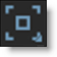 
Instead of a bounding box with on-screen controls around the shape, the bounding box is around the selected points.
Moving Shapes
Selected shapes are moved using one of three methods:
1 Drag on the outline of a shape.
2 Nudge the shapes using the arrow keys. See Nudging for more information.
3 Press the Q key to activate translation mode and click and drag to move the selected shapes. You must press the Q key a second time to deactivate translation mode.
In either case, you can constrain movement along an axis by pressing the Shift key while dragging the outline of a shape. The movement is constrained by the first direction (horizontal or vertical) that you drag in.
Scaling Shapes
Scaling changes the size of the shapes. Selected shapes are scaled using one of two methods: 1) Drag any of the points on the shape bounding box or 2) Press the E key to activate scaling mode and click and drag to scale the selected shapes. You must press the E key a second time to deactivate scaling mode.
Note: The position of the cursor when E is pressed sets the anchor point for the scaling.
To proportionately scale, hold down the Shift key when resizing.
Rotating Shapes
Rotating changes the angle of the shapes. Selected shapes are rotated using one of two methods: 1) Ctrl/Cmd-drag on a shape bounding box corner handle or 2) Press the W key to activate rotation mode and click and drag to rotate the selected shapes. You must press the W key a second time to deactivate rotation mode.
Note: The position of the cursor when W is pressed sets the anchor point for the rotation.
Corner-Pinning Shapes
The corner points of a shape’s bounding box can be corner-pinned. For instance, you could fit the corners of a shape into the corners of a billboard. Alt-drag the corners of the shape’s bounding box to corner-pin the shape.
Shearing Shapes
Shapes can be sheared resulting in the shape being skewed horizontally or vertically. To shear a shape, Ctrl/Cmd-drag on the midpoints of a shape bounding box on either the horizontal or vertical axis.
Anchor Point
A shape rotates around its center point, but scales from the opposite handle. Moving the anchor point changes the center of rotation and scaling when using the on-screen controls. To position the Anchor Point, press the . (period key) and the Anchor Point is displayed on the screen. Then, click and drag the Anchor Point to the desired location.
Now, when you rotate or scale the shape, notice how the shape rotates and scales around the Anchor Point.
Note: If more than one shape is selected, they will both rotate and scale around the Anchor Point.
Cutting, Copying and Pasting Shapes
Shapes can be cut(Ctrl/Cmd-X), copied(Ctrl/Cmd-C) and pasted(Ctrl/Cmd-V).
Deleting Shapes
A shape or selection of shapes can be easily deleted using none other than the Delete key.
Selecting Shapes
Shortcut | Action |
|---|---|
Click on a shape | Selects the shape |
Shift-click a shape or drag select multiple shapes | Selects multiple shapes |
Ctrl/Cmd-click on a shape | Toggles the shape selection |
Click anywhere off the shape | Deselects all shapes |
Shift-click color pot in the Object List | Selects shapes of same color |
Stereo Shape Selection
• When in the Left/Right View, selecting a shape also selects its linked shape.
• While in the Left/Right View, in the Transform and Reshape tools, changing the selection state of a stereo linked shape will do the same to the linked shape.
• It is possible to only select one of the two linked objects:
1 . In the Left/Right View by using the Object List.
2 . In the Transform tool by Alt-clicking a shape.
3 . In the Reshape tool by Alt-clicking an unselected shape.
• An Alert icon appears over the Left or Right View icons if there is a selected shape in the other view.
Transform - Layers
When a layer is selected and the Transform tool is active, you can set the Position, Scale, Rotation, Corner-Pin and Anchor Point of the layer using the on-screen controls.
Layer Transform On-Screen Controls
Shortcut | Action |
|---|---|
Drag within large center circle | Moves the layer |
Shift-drag within large center circle | Constrain layer movement horizontally or vertically |
Drag the intersection of the center square and the horizontal and vertical lines | Scales the layer horizontally or vertically |
Drag the center square corner | Proportionally scale the layer |
Drag large center circle | Rotate the layer |
Ctrl/Cmd-drag large center circle | Rotates the layer with finer control |
Drag handles on corners of image | Corner-pins the layer |
Drag small center circle | Moves the Anchor point |
Q | Activates / Deactivates translation of selected layers |
W | Activates / Deactivates rotation of selected layers |
E | Activates / Deactivates scaling of selected layers |
Q, W, E then Ctrl/Cmd | Translates, Rotates or Scales in finer increments |
You can also use the arrow keys to nudge the layer. See Nudging for more information.
Reshape (R)
Reshape modifies shapes by adjusting their control points and tangents.
Press and hold the Reshape icon to show the available modes or press the R key to cycle through them.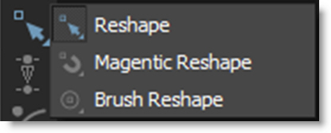
When a control point is selected, it’s control points and tangents become visible and can then be fine tuned.
Go to the Reshape tutorial to see how it works.
Reshape
Selected points all move the same amount.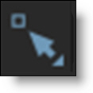
Magnetic Reshape
Points near the cursor move more than points farther away.
While in Magnet mode with multiple selected control points, you can Shift-Alt click/drag in the Viewer, not on any control points or shapes, and that becomes the magnet pull position instead of using a point.
Note: If you prefer, use the Shape > Default Reshape Tool preference to set Magnetic Reshape as the default mode.
Brush Reshape
Brush Reshape uses a circular brush to automatically select and then move points when you click and drag them using the Magnetic Reshape behavior. Pressing Shift while dragging points disables the magnetic behavior .
.
. Brush Reshape Shortcuts
Shortcut | Action |
|---|---|
Ctrl/Cmd-drag left/right | Sizes the brush |
[ and ] | Sizes the brush |
Shift-drag | Disables magnetic behavior |
Shift-Alt-drag on open area | Specifies the magnet pull position |
Point Editing
Adding Control Points
Adding control points assists in tracing more detailed images. To add a control point, Alt-click on the selected shape. Don’t click on an existing control point because it will move it instead.
Note: In a stereo project, adding points is only allowed when in the Left/Right View when both shapes are selected.
Deleting Control Points
You can delete control points in one of two ways. Select the control point and press the Delete key or right-click on the control point and select Delete from the Reshape pop-up menu.
Note: In a stereo project, deleting points is only allowed when in the Left/Right View when both shapes are selected and when both shapes have the same selected control points.
Moving Control Points
Control points are easily moved. Just select one or more control points and drag one of the selected points to a new location. You can also use the arrow keys to nudge the points. See Nudging for more information.
Numbering Points
All points or a selection of points can be numbered. To number one point or a selection of points, right-click on a selected control point and select Tag. To see all points numbered, go to File > Preferences > Shape on Windows and Linux or Silhouette > Preferences > Shape on Mac and set the Number Points preference to All.
Selecting Control Points - Reshape and Magnetic Reshape
Single Point
Click on a single point to select it.
Toggle Selection
Ctrl/Cmd-click a point to toggle the selection.
Select Range
Select a range of points by Shift-clicking start and end points.
Extend Selection
Extend the current selection by Shift-clicking an unselected point. The selection is extended by finding the nearest point of the selection.
Rectangular Selection
Click and drag a rectangle over the control points to be selected. This is the default behavior.
Freehand Selection
Control points can be selected by drawing a freehand polygon. Ctrl/Cmd-drag in the Viewer to begin the selection. Once the selection is started, release Ctrl/Cmd and complete the selection.
Note: A Shape > Freehand Point Selection preference controls whether freehand selection is used by default. Pressing Ctrl/Cmd and dragging uses the non-default method of selection. See the Shape Preferences for more information.
Control Point Selection Keyboard Shortcuts
Shortcut | Action |
|---|---|
Shortcut | Action |
Click on a control point. If the control point is part of a Bézier curve, its tangents appear | Selects the control point |
Drag select multiple control points | Selects multiple control points |
Shift-click start and end control points | Selects a range of control points |
Shift-click unselected point with current selection | Extends current selection |
Ctrl/Cmd-drag to begin a selection, release Ctrl/Cmd and complete the selection | Freehand select multiple control points |
Ctrl/Cmd-click on a control point | Toggles the point selection |
Ctrl/Cmd-Alt-I | Inverts the point selection |
Alt-Shift-A | Selects all control points |
Alt-Ctrl/Cmd-A | Deselects all control points |
Click anywhere off the shape | Deselects all control points |
Ctrl-Shift click on the spline within a grouped area | Selects point group |
Alt-[1-8] | Selects point group |
Note: When in the Left/Right View of a stereo project, changing point selection on one shape will match the point selection on the linked shape.
Feather
A shape’s points can be feathered to create variable edged blurs on a point by point basis.
Closed Shapes
In the Reshape tool, selected points display a red, outward feather handle. Dragging this handle outward will pull the feather out.
After the initial drag, the outer feather point can be dragged around independently.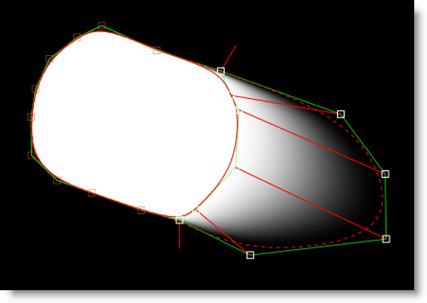
To drag shape and feather points simultaneously, press Shift while dragging the shape point.
The display of the feather handles can be hidden using Alt-F.
Feather Shortcuts
Shortcut | Action |
|---|---|
Alt-F | Toggles the shape feather handle on/off |
Shift-Drag Shape Point | Moves shape and feather points simultaneously |
Shift-Drag Feather Handle | Moves selected feather handles the same amount |
E | Incrementally expands the feather outward |
Open Shapes
In the Reshape tool, select an open shape, adjust the Stroke Width to set its thickness and choose either a flat or round Cap Style in the Parameters window. Once you've done this, additional per-point feather handles appear--a red one for the Stroke Width and a green one for the Feather.
Just drag on the handles to make adjustments.
Multiple selected points can be dragged simultaneously and by a proportionate amount. To move the shape and feather points simultaneously, press Shift while moving the shape point.
Go to the Feather tutorial to see how it works.
Shape Pop-up Menu
Right-click over a control point to open the Reshape pop-up menu and select one of the options. The options will change depending on the type of shape that is selected.
To modify multiple selected points simultaneously, do not right-click on one of the selected points. Right-click on an open area of the Viewer instead.
Invert Selection
Inverts control point selection state.
Delete
Deletes the selected control point.
Break
Breaks the shape at the selected control point.
Close
Closes an open shape.
Reset
Resets the attributes of the selected control point.
Bézier Options
Linear
Both tangents are adjusted to one quarter the distance and in the direction of their adjoining control points.
Corner
Creates a corner point.
Cardinal
Creates a smooth point where the curve passes smoothly through it.
B-Spline Options
Corner
Creates a corner point.
B-Spline
Creates a smooth point that is determined by the surrounding points.
X-Spline Options
Corner
Creates a corner point.
Cardinal
Creates a smooth point where the curve passes smoothly through it.
B-Spline
Creates a smooth point that is determined by the surrounding points.
Center
Centers the control point between its adjoining control points.
Tag
Tags control points for point numbering. For point numbers to be displayed, the Shape > Number Points preference must be set to Tagged.
Groups
Groups a selection of points for fast selection when editing in Normal/Magnetic Reshape modes as well as Point Transform mode. Each group is assigned a color as defined in the Colors > Point Groups preference.
1-8
With points selected, choose group 1-8. If points are already in a group, a check mark appears next to the number. Also, the group number is underlined if a group already exists.
None
Removes selected points from all groups.
Reset All
Remove all grouping for the selected shape.
Point Groups Keyboard Shortcuts
Shortcut | Action |
|---|---|
Ctrl-Shift click on the spline within a grouped area | Selects point group |
Alt-[1-8] | Selects point group |
Shift-Alt-[1-8] | Defines point group |
Tween
Takes the point and “re-tweens” it using the surrounding keyframes, and puts them where they would be if you hadn't moved them on that frame. Useful for simulating an “unkey” of selected points (the shape remains keyed of course).
Reverse
Reverses the order of all control points on all keyframes. Useful for warping and morphing, Reverse is used when you are trying to join two shapes where the control points go clockwise in one and counter-clockwise in the other. In this case, the correspondence points would iterate in different directions and the lines would cross each other. Reversing the points of one of the shapes would make them go in the same direction and the correspondence would be correct.
Select Start Points / Select End Points
Selects all open shape start or end points.
Split Shapes
Similar to Split Edit in non-linear editing systems where a clip is split in two, Split Shapes is useful for shapes that transform from simple to complex and vice-versa.
The original shape is duplicated and named Shape-copy. If there is an active selection, the new shape is created based on the selected points. At the current frame, the original shape is set to 0% opacity and the copied shape set to 100%. Both shapes are placed in a layer named Shape-Compound Shape. In editing terms, you are cutting from one shape to another.
Note: When using Split Shapes, it is useful to fade the shape outline based on the opacity. The V key toggles the Fade Outline with Opacity behavior on/off and when enabled, the spline visibility tracks with the opacity--splines disappear at 0 opacity and fade in from 1-100%. At the Split Shapes edit point, the "from" shape will disappear and the "to" shape will appear.
Extract Shape
Extracts the selected points of a shape into a new closed shape.
Combine Shapes
Copies selected points from a source shape between the selected points of a target shape.
• Select the points from a source shape to be copied into a target shape.
• Ctrl/Cmd-click the target shape in the Object List.
• Select two adjacent selected points in the target shape.
• Right-click and choose Combine Shapes.
Collapse Points
Collapses a selection of points into a very small area which can later be distributed between surrounding points. This is useful for shapes whose complexity changes over time.
Drag-selecting a box around the collapsed points selects them.
Distribute Points
Evenly distributes selected points.
Breaking, Closing, Joining, and Extending Shapes
Breaking Shapes
In the Reshape tool, closed shapes can be opened using the Break option from the control point pop-up menu. To break a shape, select a point and right-click on it to open the pop-up menu. Choose Break and the shape opens at the selected control point.
Note: Feather information will be removed once you break a shape.
Closing and Extending Shapes
Shapes can be closed or extended with just a few mouse clicks. It is necessary to use the Reshape tool to perform the following actions.
Closing Open Shapes
Select one of the control points at the end of the shape and Alt-click on the other end point to close the shape.
Extending Shapes
Select a control point at either end of the shape and Alt-click somewhere off the shape.
Joining Open Shapes
In the Reshape tool, open shapes can be joined together. To join open shapes, select one of the end points of the source shape by clicking on it. Next, make sure both shapes are selected in the Object window. Finally, Alt-click on one of the end points of the target shape. The two shapes are now joined together as one.
Note: The target shape inherits the attributes of the source shape.
Converting B-Splines or X-Splines to Bézier Splines
You may convert your B-Splines or X-Splines to Bézier splines at any time. To convert a B-Spline to a Bézier spline, select a B-Spline or X-Spline and choose the Edit > Spline > Convert to Bézier menu item.
Once you select Convert to Bézier, a couple of things happen. The visibility of the B-Spline or X-Spline is toggled to off. A new Bézier spline is created and is named the same as the B-Spline or X-Spline but has an * at the end of the name.
Note: The Bézier conversion of B-Splines that use extreme, variable weight adjustments will not exactly match the original B-Spline. Do not use extreme, variable weight adjustments if you are planning on converting the B-Spline to a Bézier.
Nudging
Shapes, control points and layers can be nudged using the Arrow keys. One press of the Arrow key moves 1 pixel. Using the Shift key in conjunction with the Arrow keys moves 10 pixels. Ctrl plus the Arrow keys moves one tenth of a pixel. These nudge values can be changed in the Preferences menu located in File > Preferences > Nudging on Windows and Linux or Silhouette > Preferences > Nudging on Mac. Holding the Arrow keys down moves the selection continuously.
Nudging Keyboard Shortcuts
Shortcut | Action |
|---|---|
Arrow keys | Moves by 1 pixel |
Shift-Arrow keys | Moves by 10 pixels |
Ctrl/Cmd-Arrow keys | Moves by one tenth of a pixel |
Hold down Arrow keys | Moves continuously |
Q, W, E then Ctrl/Cmd-drag | Translates, Rotates or Scales in finer increments |
Q, W, E then Arrow keys | Translates, Rotates or Scales by 1 pixel |
Q, W, E then Shift-Arrow keys | Translates, Rotates or Scales by 10 pixels |
Q, W, E then Ctrl/Cmd-Arrow keys | Translates, Rotates or Scales by 1/10 of a pixel |
Note: Nudging of the layer transform is only available if one layer is selected, and no shapes are selected. This is to avoid confusion in case nested layers or objects in them are also selected.
IK-Inverse Kinematics (Y)
In computer graphics, inverse kinematics (IK) is a technique that provides automatic movement of objects. It allows elements of an object to be linked, such as the parts of an arm or leg, and causes them to move in a prescribed, realistic manner. IK simplifies the process of rotoscoping jointed, segmented figures by making the motion of each part related to the motion of the linked parts. That way, you simply have to animate the starting and ending joints, and the ones in between will adjust themselves and create more natural looking movement.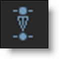
Go to the IK tutorial to see how it works.
Silhouette implements IK within its existing infrastructure by using layers to model joints with one or more shapes in each layer to represent the pieces of the object. To do an arm, you would have this layout:
Arm, Elbow and Wrist are layers while Upper Arm, Forearm and Hand are shapes located in the appropriate layer.
Once the layers and shapes have been setup, the joints need to be placed by positioning the Anchor Point of each layer using the Transform tool.
With the IK tool selected, select the shapes and an IK chain is built on the fly that flows up the shape's layer tree to the top-most layer. Each layer’s Anchor Point becomes a joint in the IK chain. The “bones” are just the connections between the layer anchors.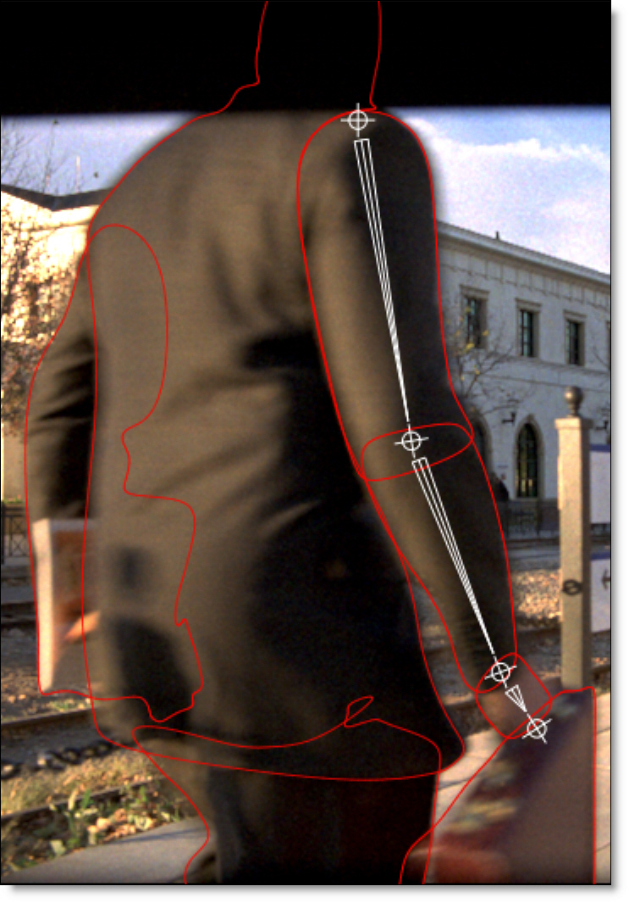
Click-drag a bone or shape to rotate the shape around the parent’s anchor point. Click-dragging a joint uses IK to rotate all joints up the chain. Alt-click-drag a joint to move the joint while attempting to keep other joints in place.
When animated, keyframes are automatically set for each layer’s rotation parameter. However, you can explicitly set the layer rotation keyframes by right-clicking on a selected bone and choosing Add Key.
Note: To quickly jump between the Reshape, Transform, and IK tools while editing a shape, use the shortcut keys: R for Reshape, T for Transform and Y for IK. R, T and Y are very convenient since they are right next to each other.
IK Editing
Action | Result |
|---|---|
Click-drag bone or shape | Rotates the shape around the parent’s anchor point |
Click-drag joint | Uses IK to rotate all joints up the chain |
Alt-click-drag joint | Moves the joint but tries to keep other joints in place |
Right-click bone-Add Key | Sets keyframes for the selected bones |
Tracker
Tracking is a technique that involves analyzing the motion of an image over time. In Silhouette, images can be tracked using an automatic image tracking system called Planar Tracking or Point Tracking which utilizes either one, two or four track points. Silhouette includes two Planar Trackers: Silhouette’s Planar Tracker and the Mocha Planar Tracker.
Go to the Tracker node to see how it works.
MultiFrame (M)
Normally, adjusting a shape, points on a shape, or tracker are keyframed only on that particular frame. When MultiFrame is activated, it modifies the Transform and Reshape tools to allow you to make adjustments across all previously set keyframes or a selection of keyframes. A red outline is drawn around the Viewer to let you know that MultiFrame is active.
The keyframe adjustment can also be weighted based on a specified Fade In or Fade Out time period. Keyframes within the fade areas are adjusted less than those that are not. The MultiFrame Start and End as well as the Fade In and Fade Out parameters can be set in either the Timebar or Timeline.
Timebar
Set the Start and End as well as the Fade In and Fade Out values using the numeric fields that appear in the Timebar when MultiFrame is selected.
Start
Sets the start of the MultiFrame range.
Fade In / Fade Out
Controls the strength of the MultiFrame adjustment. For instance, if an object is slowly drifting, the strength of the adjustment can be faded in or out.
Fade In
Sets the first frame where the MultiFrame adjustment is 100%.
Fade Out
Sets the last frame where the MultiFrame adjustment is 100%.
End
Sets the end of the MultiFrame range.
Timeline
Set the Start and End by clicking and dragging the ends of the red MultiFrame track in the Timeline.
Set the Fade In and Fade Out values by pressing Ctrl/Cmd and dragging the start and end of the red MultiFrame range.
Go to the MultiFrame tutorial to see how it works.
Note: When using MultiFrame, attempts to edit a shape outside the MultiFrame range will be ignored. If you try to transform a shape and nothing happens, check to see if the MultiFrame range is active at that particular point in time.
Add Weighted Key (Alt-K)
Add Weighted Key creates a keyframe at the current position which changes the timing of the shape animation between two surrounding keyframes. Park between two keyframes, select a shape, press Alt-K, and drag the slider to adjust the weight.
RotoOverlay (Shift-O)
The RotoOverlay tool provides three options to visualize the selected shape’s animation and motion blur: Motion Path, Motion Blur and Onion Skin.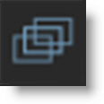
Once selected, a Roto Overlay window opens allowing you to select or deselect various options.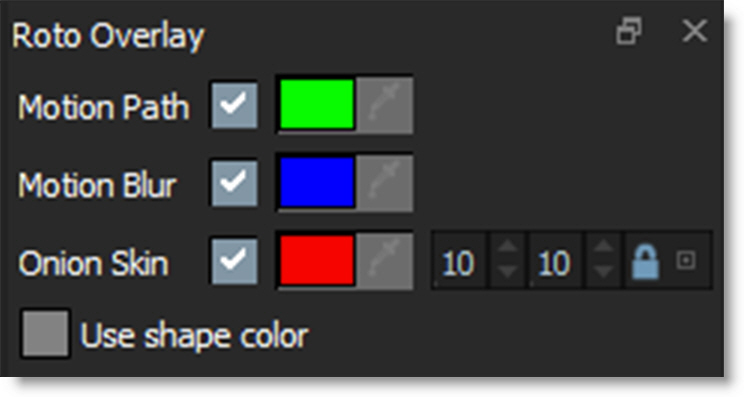
Motion Path
Displays the shape’s motion path with visual indicators for frames and keyframes.
Hold Alt over a motion path marker and the frame number is displayed in the status bar. Click on the marker and the Timebar will jump to that frame.
Motion Blur
Displays a dashed line to show the width of the motion blur.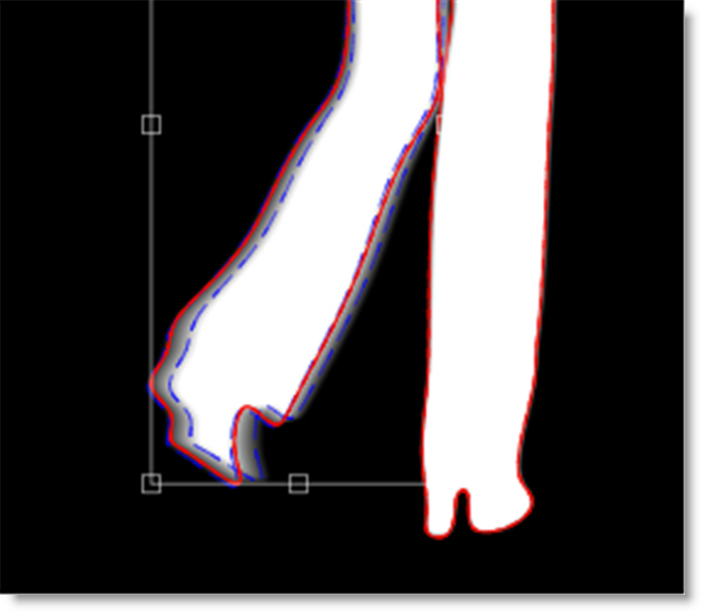
Note: When the Viewer is set to Foreground, this option allows you to visualize the motion blur without rendering it. This provides a significant speed increase when using many shapes with motion blur.
Onion Skin
Shows the shape outline on previous and future frames.
Hold Alt over an onion skin shape and the frame number is displayed in the status bar. Click on the shape and the Timebar will jump to that frame.
Onion Skin Frame Range
Determines the amount of frames used in the onion skin.
Backward
The Onion Skin Frame Range Backward numeric field (the first one) displays the frames before the current frame.
Forward
The Onion Skin Frame Range Forward numeric field (the second one) displays the frames after the current frame.
Note: By default, the Backward and Forward numeric fields are ganged together. Click the lock icon to decouple them.
Use Shape Color
As an alternative to using the pre-defined colors for the Motion Path, Motion Blur and Onion Skin, you can use the default shape colors.
Shape Import and Export
Importing Shapes
Silhouette, Mocha Pro, and Shake 4.x SSF shapes can all be imported into Silhouette using the File > Import > Shapes menu.
Note: Mocha Pro shapes and layers are imported into Silhouette using the Silhouette Shapes format. If Copy to Clipboard was used in Mocha Pro instead of saving to a file, the shapes and layers are copied to the system clipboard and can then be pasted into a Silhouette Roto node.
Go to the Import tutorial to see how it works.
Exporting Shapes
Silhouette, Fusion, gMask (Flint, Flame, Inferno), Nuke and Shake 4.x SSF shapes can all be exported using the File > Export > Shapes menu.
Go to the Export tutorial to see how it works.
After Effects
Importing Silhouette Shapes into After Effects
The Silhouette Shape Import/Export Plug-in for After Effects is required to convert Silhouette Shapes into After Effects masks. When importing Silhouette Shapes, the following shape parameters transfer into After Effects: opacity, blur, shape color, shape name, invert and locked states, transfer mode and per-shape motion blur state.
Go to the After Effects section of the Import tutorial to see how it works.
Exporting After Effects Masks to Silhouette Shapes
The Silhouette Shape Import/Export Plug-in for After Effects is required to convert After Effects masks to Silhouette Shapes. When exporting After Effects masks, the following shape parameters transfer into Silhouette: opacity, blur, shape color, shape name, invert and locked states, transfer mode and per-shape motion blur state.
Go to the After Effects section of the Export tutorial to see how it works.
Notes
1 When importing and exporting Silhouette Shapes using the Silhouette Shape Import/Export Plug-in for After Effects, the general rule is that the After Effects composition size must match the Silhouette session size for shapes to import and export properly. However, as long as the ratio of the sizes between the After Effects composition and the Silhouette session match, you can successfully import and export shapes between them. For instance, you could import or export shapes from a 2000x1000 Silhouette session to a 1000x500 After Effects composition with no problems, as long as the pixel aspects were the same.
2 When After Effects has the Preserve Constant Vertex Count in the General Preferences dialog deactivated, it is possible for a differing number of control points to occur on different keyframes. These type of shapes can’t be imported into Silhouette.
Nuke
Exporting Shapes
There are three Nuke shape export options--Nuke 5 Shapes, Nuke 6.2+ Shapes and Nuke 9+ Shapes.
Nuke 5 Shapes
Nuke 5 Shapes (for Nuke 5.1v3 and above), Silhouette shapes and their blend modes are exported. Silhouette will also export Hold and Linear key frames for Opacity. When exported, tracker and shape data are baked together.
Nuke 6.2+ Shapes
Nuke 6.2+ Shapes will export the shape opacity, blend mode, invert, motion blur, outline color, shape blur (inner and outer blur only) as well as the layer and node blur and motion blur.
Nuke 9+ Shapes
Nuke 9+ Shapes will export open/closed shapes, the shape feather, opacity, blend mode, invert, motion blur, outline color, fill color, shape blur (inner and outer blur only), and visibility. The layer’s blur, visibility and motion blur are also exported in addition to the node blur. You can optionally fully bake shape and transform data, convert opacity to Nuke Lifetime, and export the Silhouette project name as determined by the Nuke 9+ Shapes preferences.
Notes
1 To ensure that the Alpha channel displays the same in Nuke as it did in Silhouette, select the Nuke Viewer node, right-click in the Viewer, choose Viewer settings, and then enable “apply LUT to color channels only”. The Alpha channel in Nuke will now match Silhouette.
2 X-Splines and B-Splines are converted to Bezier's in Nuke.
3 Only Blurs set to Inside and Outside will transfer to Nuke.
4 Blend Modes
• Multiply is not supported as Nuke and Silhouette’s notion of Multiply are different.
• Inside is not supported as Nuke has no equivalent.
5 Layer blend modes are not implemented as Nuke does not support them.
6 Nested transformations are exported fully baked because Nuke does not actually nest transformations in its layers. If a layer contains only shapes or only layers, nested transforms are exported. This is the preferred case. If a layer contains layers and shapes, transforms are baked into the shape transform--not the shape points.
Shake
Import
Shake 4.x shapes are imported into Silhouette, but attributes such as feathering, color and opacity are ignored.
Export
Silhouette will export the shape name, locked/unlocked state, opacity, visibility, motion blur on/off, shutter angle, and shutter phase. In addition, subtractive shapes import into Shake as black in the RGB channels with a white alpha channel.
Node Parameters
When the Roto node is being edited in the Trees window, parameters specific to the Roto node, such as Motion Blur, can be adjusted in the Node parameters.
Alpha
Invert
Inverts the alpha channel.
Blur
Blurs the alpha Channel. The blur range is from 0-100 and defaults to 0.
Color
Renders shapes as outlines or filled with color in the RGB output. The color is set using the Shape > Color parameter.
Enable
Activates the color parameters.
Outline Size
Sets the thickness of the shape outline.
Fill Opacity
Sets the opacity of the color fill. You can also change the opacity of each shape separately using the Shape > Opacity control.
Motion Blur
Motion blur is the directional blurring of rapidly moving shapes. Enables Motion Blur for the Roto node.
Go to the Motion Blur tutorial to see how it works.
Enable
Turns Motion Blur on or off. The default is off. Leave this turned off for faster interaction while editing shapes.
Note: The Motion Blur parameters will not affect shapes unless you first activate Motion Blur for each shape in the Object Parameters. See the Motion Blur section in the Shape Parameters for more information.
Shutter Angle
Determines how long the camera shutter stays open when a picture is taken-- higher values create more motion blur. The range of the Shutter Angle is 0-720 and defaults to 180. Measured in degrees, it simulates the exposure of a rotating camera shutter. The shutter angle uses the footage frame rate to determine the simulated exposure. For example, a shutter angle of 180 degrees (50% of 360 degrees) for 24fps footage creates an effective exposure of 1/48 of a second. Typing 1 degree applies almost no motion blur, and typing 720 degrees applies a high degree of motion blur.
Shutter Phase
Offsets the point in time, either forward or reverse, when the shutter opens. The range of the Shutter Phase is -360 to 360 and defaults to -90.
Motion Samples
Renders intermediate frames equal to the Motion Samples value and accumulates them, one over the other, on a single frame. The higher the number, the smoother the motion. The Motion Samples range is from 1-256 and defaults to 16.
Note: Normally, motion blur is calculated going forward, so if there is no shape motion beyond the end of a clip, there won’t be motion blur on the last frame. To work around this, add an extra frame or two to the end of the work range in the Timebar and move the shape’s last keyframe to be outside of the session range.
Antialias
Controls whether roto shapes are antialiased on their edges.
Node Outputs
Output
Outputs the foreground input and generated matte.
Color Composite
Outputs a composite of the foreground over a solid color based on the Roto > Composite Color preference. The default color is gray.
Composite
Outputs a composite of the foreground over the background based on the generated matte.
Channels
Renders shapes to different channels of an RGBA image as defined by the Shape > Channel parameter.
Data
Outputs tracked layers and shapes for use in nodes with Data inputs.